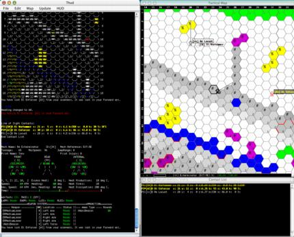
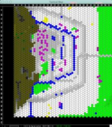
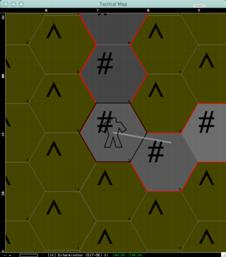
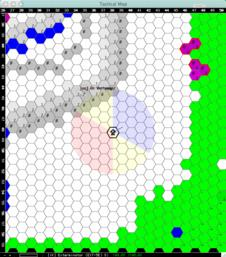
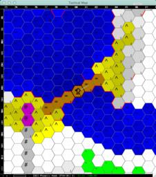
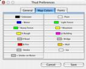

Thud Screenshots
Here are some screenshots showing Thud running on Mac OS X (it should run on any platform with Java 1.3.1 or better). To get a bigger version, click on the thumbnail.

The entire interface: main window on the left, tactical map on the right, and contacts display on the bottom right.

You can zoom Thud far out to see a big picture of the terrain and action...

... or zoom way in to help with navigation.

Another example of Thud zoomed out, here you can see the effect that Thud can produce to show where the deep water (or high elevations are) by altering the color of the terrain.

Thud can show you the arcs for your unit, front is blue, sides are yellow, and back is red. It can also extend the arcs to match the range of your weapons.

Piloting can get tricky when you're trapped in dangerous terrain, but Thud can highlight cliffs with a red marker to help avoid hitting them.

Finally, a screen shot of one of the preferences tabs. Here you can set the colors on the map, font sizes, and more.
Back to main Thud page